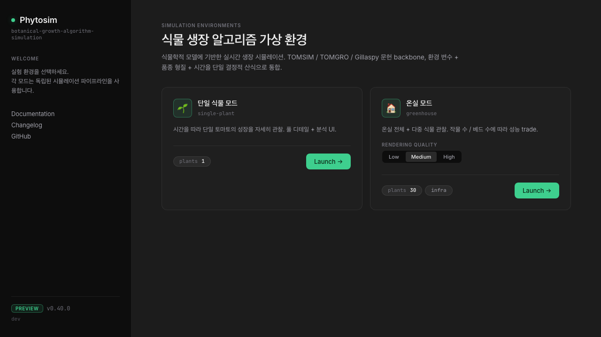
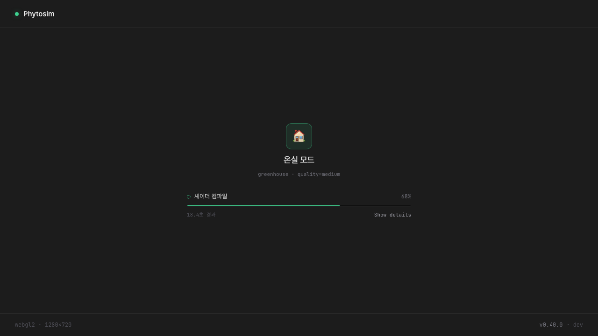
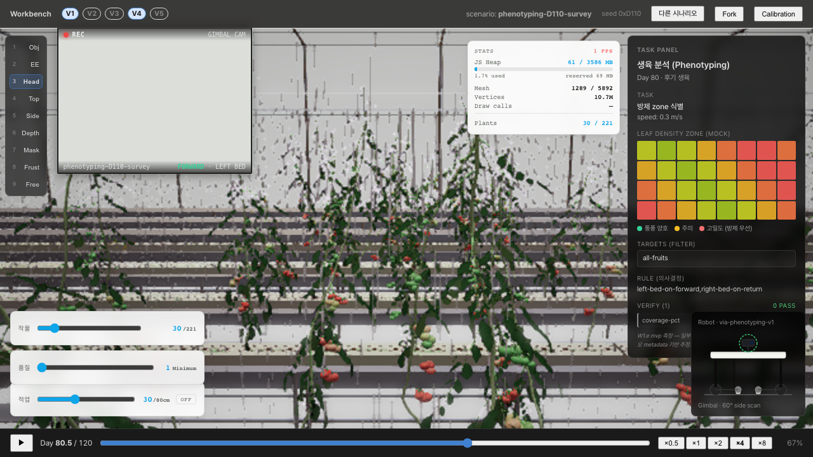
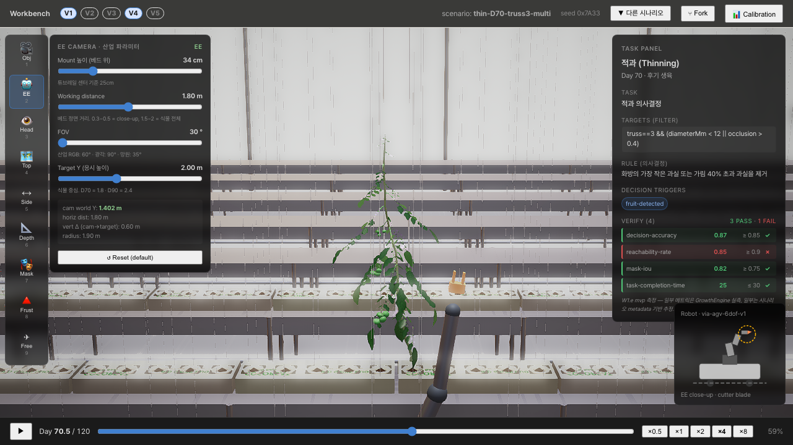
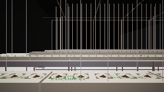

문서 정보
| 항목 | 내용 |
|---|---|
| 문서명 | 운용 매뉴얼 |
| 산출물 번호 | #6 |
| 과제번호 | RS-2025-02219411 |
| 사업명 | 스마트팜 다부처패키지 혁신기술개발사업 |
| 작성일 | 2026.06.18 |
| 대상 독자 | 본 시뮬레이터를 처음 인수받는 운영자 |
1. 본 매뉴얼의 목적과 대상 독자
본 매뉴얼은 적심·적과 농작업 로봇 관제 시각화 시뮬레이터를 처음 인수받는 운영자가 시뮬레이터를 설치하고, 시나리오를 선택하고, 적심·적과 관제 시연을 수행하고, 결과를 해석하는 전 과정을 단계별로 수행할 수 있도록 작성되었다.
1.1 대상 독자
- 본 시뮬레이터를 처음 받아 쓰는 운영자
- 사업 관계자 시연을 진행하는 발표자
- 검수 입회자 및 인수자
- 운용 절차를 익히려는 신규 협업자
1.2 본 매뉴얼이 다루지 않는 것
- 시뮬레이터의 소스 코드 수정 또는 빌드 (→
08_Developer_Guide.pdf) - 검수 시 합부 판정 기준 (→
09_Inspection_Plan.pdf) - 시스템 아키텍처 설명 (→
06_Architecture_Spec.pdf) - 시험 결과 해석 (→
10_Test_Report.pdf)
1.3 본 매뉴얼의 구성
본 매뉴얼은 다음 14개 장으로 구성된다.
- 본 매뉴얼의 목적과 대상 독자 (본 장)
- 시뮬레이터 시작품 개요
- 시스템 요구사항
- 설치 절차
- 처음 실행
- 시나리오 선택
- 적심·적과 관제 시연 절차
- 결과 시트 해석
- 파노라마 뷰어
- 히스토리 드로어
- 디버그 옵션
- 시나리오별 운용 팁
- 트러블슈팅
- FAQ 및 문의처
2. 시뮬레이터 시작품 개요
2.1 본 시작품이 무엇인가
본 시뮬레이터는 적심·적과 농작업 로봇이 실제 온실에서 운용되기 전, 관제 화면·운용 시나리오·디텍션 결과 표시를 가상 환경에서 사전 검증·시연하기 위한 시뮬레이터 시작품이다.
가상 환경 안에서 다음을 시연할 수 있다.
- 온실 안에 식재된 토마토 식물 군집의 3D 시각화
- 적심·적과 로봇이 베드를 따라 traverse 하는 모습
- 짐벌 카메라로 본 식물 시점 (Picture-in-Picture)
- 카메라 시점 영상에 실시간 디텍션 결과 오버레이
- 페노타이핑 서베이 (좌우 베드별 과실 카운트와 익음 단계)
- 운용 결과 시트 및 누적 이력
2.2 본 시작품이 시연하지 않는 것
- 실제 적심·적과 액추에이터의 절단·수확 동작
- 실제 로봇 본체의 조립 및 운용
- 본 사업 관제 시스템 본 개발 (별도 산출물)
- 외부망 연동, 클라우드 운영, 상용 배포 측면
이 분리는 발주서·계약서·과업지시서의 "과업 제외 범위"로 명문화되어 있다.
2.3 본 시작품의 활용 시나리오
본 시뮬레이터는 다음과 같은 상황에서 활용한다.
- 대외 시연 — 적심·적과 관제 시스템의 운용 모습을 사업 관계자에게 시연
- 인터페이스 점검 — 주관기관 관제 시스템과 본 시뮬레이터 사이의 데이터 흐름 검증
- 실증 사전 점검 — 실증 사이트 입회 전 운용 절차 사전 리허설
- 신규 인수자 교육 — 본 매뉴얼을 따라 운용 절차 학습
3. 시스템 요구사항
3.1 운영체제
| 운영체제 | 최소 / 권장 | 비고 |
|---|---|---|
| Windows 11 (22H2 이상) | ✓ | 권장 |
| macOS 14 (Sonoma) 이상 | ✓ | 권장 |
| Ubuntu 22.04 LTS 이상 | ✓ | 가능 |
3.2 브라우저
| 브라우저 | 최소 버전 | 비고 |
|---|---|---|
| Google Chrome | 120 이상 | 권장 |
| Mozilla Firefox | 120 이상 | 권장 |
| Microsoft Edge | 120 이상 | 가능 (Chromium 기반) |
| Safari | 17 이상 | 일부 WebGPU 기능 제한 |
브라우저는 반드시 WebGL2가 활성화되어 있어야 한다. WebGL2 활성 여부는 다음 URL에서 확인할 수 있다.
about://gpu/ (Chrome / Edge)
about:support (Firefox)
3.3 GPU 사양
| 등급 | GPU 사양 | 기대 성능 |
|---|---|---|
| 최소 | Intel Iris Xe 또는 동등 | 30 fps 정도 |
| 권장 | NVIDIA RTX 3060 또는 동등 이상 | 60 fps 이상 |
| 최적 | NVIDIA RTX 4070 또는 동등 이상 | 60 fps 안정 + 최고 품질 |
3.4 네트워크
본 시뮬레이터는 외부망 의존성이 없다. 로컬 머신 안의 localhost(ws://localhost:8090) WebSocket만 사용한다.
3.5 디스크 / 메모리
| 자원 | 권장 |
|---|---|
| 디스크 여유 공간 | 200 MB 이상 (빌드 zip 압축 해제 후 약 60 MB) |
| RAM | 8 GB 이상 (16 GB 권장) |
4. 설치 절차
4.1 산출물 수령
검수 완료된 산출물 패키지에서 다음 두 파일을 확보한다.
02_Monitoring_Sim_Build.zip— 시뮬레이터 실행 빌드07_User_Manual.pdf— 본 매뉴얼
4.2 압축 해제
02_Monitoring_Sim_Build.zip을 임의의 폴더에 압축 해제한다.
/Users/<user>/MonitoringSim/
├── index.html
├── assets/
└── (그 외 정적 파일)
4.3 정적 서버 띄우기
본 시뮬레이터는 로컬 정적 서버가 필요하다 (브라우저 file:// 직접 열기로는 일부 기능이 동작하지 않는다).
4.3.1 Node 환경이 있는 경우
npx serve <압축_해제_폴더>
http-server, serve 등 임의의 정적 서버를 사용할 수 있다.
4.3.2 Python 환경이 있는 경우
cd <압축_해제_폴더>
python3 -m http.server 8090
4.3.3 별도 도구 없이
VSCode의 Live Server 확장, IntelliJ의 내장 서버, 또는 다른 IDE 정적 서버를 사용한다.
4.4 접속
브라우저에서 다음 URL을 연다.
http://localhost:8090/
또는 정적 서버가 다른 포트를 사용하면 그에 맞는 URL을 사용한다.
5. 처음 실행
5.1 EntryScreen
브라우저로 처음 진입하면 EntryScreen이 표시된다. 여러 운용 모드 중 선택할 수 있다.
| 모드 | 용도 |
|---|---|
| Workbench | 본 시연의 기본 모드 — 시나리오 선택 후 적심·적과 관제 시연 |
| SinglePlant | 단일 식물 분석 (참고용) |
| Foundry | 식물 조형 도구 (참고용) |
| Twin | 디지털 트윈 모드 (참고용) |
| Calibration | 학술 모델 캘리브레이션 (참고용) |
본 매뉴얼은 Workbench 모드를 기본으로 설명한다.

5.2 Workbench 진입
EntryScreen에서 Workbench를 선택하면 시나리오 Picker가 표시된다.

5.3 첫 로딩
처음 진입 시 다음 단계로 로딩이 진행된다.
- WebGL2/WebGPU 엔진 초기화
- 씬 인프라 빌드 (light, environment 등)
- 온실 인프라 빌드 (베드, 튜브, 구조물)
- 식물 인스턴스 빌드 (가장 시간이 오래 걸림 — 시드별 식물 군집 생성)
- 렌더 품질 적용
- 첫 프레임 셰이더 컴파일
- Ready 단계 — 첫 프레임 렌더 완료
권장 사양에서 첫 진입 부팅 시간은 약 5 초 이내다. 최소 사양에서는 10–20 초가 소요될 수 있다.

6. 시나리오 선택
6.1 시나리오 Picker
Workbench 모드 진입 시 Picker 화면이 표시된다. 적심·적과 관제 시연에 적합한 시나리오를 선택한다.
권장 시나리오: phenotyping-D110-survey — 정착 후 110일된 토마토 군집에서 좌우 베드 페노타이핑 서베이를 수행한다.

6.2 시나리오 정보
각 시나리오는 다음 정보를 가진다.
- 시나리오 ID (예:
phenotyping-D110-survey) - 영역 (
phenotyping,foundry,single-plant등) - 작물 단계 (D 단계 — 정착 후 일수)
- 시드 (재현성)
- 베드 레이아웃 (
2-4-4등)
6.3 URL 파라미터로 시나리오 진입
Picker를 건너뛰고 직접 시나리오에 진입할 때는 URL 파라미터를 사용한다.
http://localhost:8090/?mode=workbench&scenario=phenotyping-D110-survey&bedLayout=2-4-4&activeBedIds=4,5,6,7,8,9&robotProfile=phenotyping&robotTraverse=1&gimbalView=1&qualityPreset=8
주요 파라미터:
| 파라미터 | 예시 | 의미 |
|---|---|---|
mode |
workbench |
운용 모드 |
scenario |
phenotyping-D110-survey |
시나리오 ID |
seed |
20260520 |
결정성 시드 (오버라이드) |
bedLayout |
2-4-4 |
베드 레이아웃 |
activeBedIds |
4,5,6,7,8,9 |
활성 베드 ID 쉼표 구분 |
robotProfile |
phenotyping |
로봇 프로파일 |
robotTraverse |
1 |
자동 traverse 활성 |
gimbalView |
1 |
PiP 표시 |
qualityPreset |
1–10 |
렌더 품질 (1=최소, 10=최고) |
7. 적심·적과 관제 시연 절차
본 장은 시연자가 따라 할 수 있는 핵심 절차다.
7.1 진입
권장 시나리오에 진입한 직후 다음을 확인한다.
- 화면 중앙: 온실 메인 카메라 시점
- 왼쪽 위: PiP — 짐벌 카메라 시점 (
GIMBAL CAM라벨) - 우측 패널:
TaskPanel— 시뮬레이션 제어 도크 - 좌측 슬라이더: 레일 위치 슬라이더 (
RAIL X) - 우측 슬라이더: 속도 슬라이더 (
SPEED)

7.2 START SURVEY
TaskPanel에서 START SURVEY 버튼을 누르면 페노타이핑 서베이가 시작된다.
상태 변화는 PiP 상단 chip에 표시된다.
| 상태 | 의미 |
|---|---|
→ scanning L (NN%) |
좌측 베드 forward 스캔 진행 중 |
· stitching panorama |
좌측 베드 프레임을 파노라마로 조합 |
● DETECTING <detector_id> |
좌측 베드 디텍션 실행 중 |
← scanning R (NN%) |
우측 베드 return 스캔 진행 중 |
· stitching panorama |
우측 베드 파노라마 조합 |
● DETECTING <detector_id> |
우측 베드 디텍션 실행 중 |
✓ done |
서베이 완료 — 결과 시트 자동 갱신 |
✗ aborted |
중도 종료 |
7.3 짐벌 카메라 PiP 보기
PiP는 두 가지 모드로 동작한다.
7.3.1 Stream 모드 (기본)
기본 설정. 카메라 영상이 WS 스트림으로 전송되어 <img>로 렌더된다. 설정 드로어에서 PiP Mode = stream 확인.
7.3.2 In-canvas 모드 (대체)
레거시 경로. 설정 드로어에서 PiP Mode = in-canvas로 토글하면 메인 캔버스의 sub-region으로 짐벌 카메라가 직접 렌더된다.
두 모드의 결과는 시각적으로 유사하지만, Stream 모드가 권장된다 (디텍션 워커가 동일 스트림을 구독하므로 PiP와 디텍션이 동일한 source of truth를 본다).

7.4 디텍션 오버레이 해석
PiP 위에 색깔 원이 표시된다. 각 원은 한 개의 감지된 토마토를 의미한다.
| 색 | Ripeness Bin | 의미 |
|---|---|---|
| 녹색 | green | 미숙 (초록) |
| 노랑 | breaker | 색 시작 |
| 주황 | turning | 익는 중 |
| 분홍 | pink | 분홍빛 |
| 빨강 | red | 완숙 |
원의 크기: 카메라로부터의 거리에 반비례 (가까울수록 크게). 원의 진하기(opacity): 신뢰도 (불투명할수록 신뢰도 높음).

7.5 진행률·프레임 카운트
TaskPanel의 진행률 표시:
progress: NN%— 전체 서베이 진행률 (forward 0–50%, return 50–100%)frameCount: N— 현재 패스에서 캡처된 프레임 수
서베이 1회 (좌우 베드) 예상 소요 시간:
- 권장 사양 + 0.3 m/s 속도: 약 1 분 30 초
- 최소 사양: 2 분 정도
7.6 PAUSE / RESUME / STOP
TaskPanel의 보조 버튼:
PAUSE— 일시 중지 (rail 정지, 캡처 정지)RESUME— 일시 중지에서 복귀STOP / RESET— 서베이 중단 + 결과 폐기
7.7 서베이 완료 후
서베이 완료 시 자동으로 다음이 트리거된다.
SurveyResultSheet(결과 시트) 갱신SurveyHistoryDrawer(히스토리)에 본 서베이 항목 추가- PiP 상단 chip:
✓ done
8. 결과 시트 (Result Sheet) 해석
서베이 완료 후 화면에 결과 시트가 표시된다. 주요 항목:
8.1 헤더
- 검수 대상명, 작성 일자
- 검수자 정보 (운영자가 입력)
8.2 카운트 표
| 좌측 베드 / 우측 베드 | bin별 카운트 |
|---|---|
| green | NN |
| breaker | NN |
| turning | NN |
| pink | NN |
| red | NN |
| 합계 | NN |

8.3 분포 차트
각 베드별 ripeness 분포 막대 차트.
8.4 검수 메모
운영자가 자유 기술 (보완 사항, 관찰사항). 검수 보고서에 자동 포함.
8.5 결과 시트 내보내기
- CSV로 내보내기
- 인쇄용 PDF 변환
- 클립보드로 표 복사
9. 파노라마 뷰어
서베이 중 캡처된 짐벌 카메라 프레임을 좌→우 순서로 stitch한 파노라마.
9.1 좌측 베드 파노라마
좌측 베드 forward 패스에서 캡처된 프레임의 합성 결과. 표시 항목:
- 파노라마 전체 (좁고 길게)
- 디텍션 bbox 오버레이 (toggle 가능)
- 디텍션 통계 (개수, 평균 신뢰도)

9.2 우측 베드 파노라마
우측 베드 return 패스 결과.
9.3 파노라마 zoom
마우스 휠 또는 ± 버튼으로 zoom in/out. 특정 영역을 확대해서 디텍션 결과를 자세히 확인할 수 있다.
10. 히스토리 드로어
SurveyHistoryDrawer는 과거에 수행된 서베이의 결과를 한 곳에서 비교할 수 있는 드로어이다.
10.1 항목 목록
각 서베이는 다음 정보로 표시된다.
- 작성 일자·시간
- 시나리오 ID
- 작물 단계 (D 단계)
- 디텍션 합계 (좌측·우측)
- 적합/부적합 표시
10.2 비교
두 개 이상의 서베이를 선택해서 표·차트로 비교할 수 있다.
10.3 내보내기
- 전체 히스토리 CSV
- 선택 항목만 zip 묶음
11. 디버그 옵션
URL 파라미터로 디버그 모드를 활성화할 수 있다.
| 파라미터 | 의미 |
|---|---|
?debug=stream |
카메라 스트리밍 producer/consumer 진단 로그 |
?debug=capture |
캡처된 프레임의 가장 최근 frame을 window.__lastCaptureFrame에 노출 |
?debug=isolatedLeaf |
잎 단일 디버그 모드 (Workbench 외) |
?debug=* |
모든 디버그 활성 |
?quality=N |
렌더 품질 강제 (1–10) |
?seed=N |
시드 오버라이드 |
디버그 로그는 브라우저 DevTools의 Console 탭에서 확인.

12. 시나리오별 운용 팁
12.1 phenotyping-D110-survey
- 작물 단계 D110은 트러스 4–5개 활성 상태. 익은 토마토 10개 이상 기대.
- 좌우 베드 traverse 시 약 1.5 분 소요.
- 결과 시트의 합계가 30개 이상이면 정상.
12.2 다른 시나리오
scenarios/loader.ts를 참조하거나 Picker에 표시된 후보를 확인.
12.3 시드 변경
같은 시나리오라도 시드를 바꾸면 식물 군집이 다르게 생성된다. 시드별 결과 차이를 비교하려면 URL ?seed=<n>을 변경.
13. 트러블슈팅
13.1 첫 진입 시 화면이 회색이고 부팅 안 됨
- WebGL2 활성 여부 확인 (
about:gpu또는about:support) - 다른 브라우저 (Chrome / Firefox)로 시도
- GPU 드라이버 업데이트
13.2 디텍션 결과가 0건
- ONNX 모델 로드 진행 중일 수 있음 — TaskPanel의 detectorLoadProgress 확인
- 모델 로드 진행 후 다시 START SURVEY
13.3 PiP 영상이 회색
- 스트리밍 모드 토글 시도 (Stream ↔ In-canvas)
- DevTools Console에
[cam-stream]로그 확인 - 페이지 새로고침 후 다시 시도
13.4 fps가 30 미만
?quality=4또는 더 낮은 값으로 진입- 다른 브라우저 탭을 닫아 GPU 자원 확보
13.5 서베이가 ✗ aborted 상태로 끝남
- DevTools Console 로그 확인
- 모델이 로드되지 않은 상태에서 START 했을 가능성
14. FAQ 및 문의처
14.1 자주 묻는 질문
Q. 같은 시드로 다시 실행하면 같은 결과가 나오는가? A. 예, 시드 + 시나리오 ID가 같으면 식물 군집·카메라 traverse·디텍션 입력은 동일하게 재현된다.
Q. ONNX 모델을 다른 것으로 교체할 수 있는가?
A. 개발자 가이드(08_Developer_Guide.pdf)의 "디텍터 swap" 항목 참조.
Q. 본 시뮬레이터를 외부망에 노출할 수 있는가? A. 본 시작품은 localhost 전용 dev 모드로 동작한다. 외부망 노출은 본 산출물의 범위 외이며, 본 사업의 본 개발 범위(주관기관)에서 다룬다.
Q. 본 시뮬레이터가 측정하는 ripeness bin은 어떻게 결정되는가?
A. 두 단계 파이프라인: (1) YOLOv8 instance detection으로 토마토 후보 bbox 추출, (2) HSV 5밴드 분류기로 bbox별 ripeness bin 할당. 상세는 04_Detection_Models.zip의 hsv_parameters.json 및 model_metadata.json 참조.
14.2 문의처
- 사업명: 스마트팜 다부처패키지 혁신기술개발사업 — 과채류 맞춤형 농작업 지능로봇 및 관제 시스템 개발 및 실증 (RS-2025-02219411)
- 수행기관: 주식회사 비아
- 본 시뮬레이터 시작품 관련 문의: 본 시작품을 발주한 수행기관 담당자
14.3 관련 문서
| 문서 | 위치 |
|---|---|
| 시스템 아키텍처 설계서 | 06_Architecture_Spec.pdf |
| 개발자/관리자 가이드 | 08_Developer_Guide.pdf |
| 검수 플랜 | 09_Inspection_Plan.pdf |
| 검수 시험 결과 보고서 | 10_Test_Report.pdf |
| 디텍션 모델 자산 | 04_Detection_Models.zip |
| 시나리오·데이터셋 | 05_Scenario_Datasets.zip |